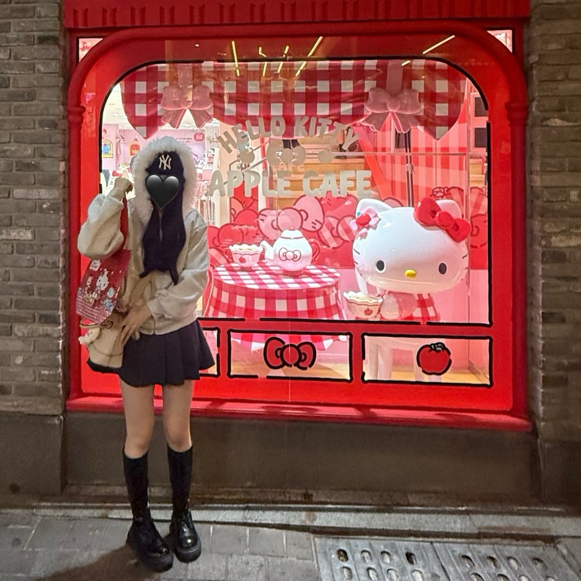

生澤里莉花 Ririka Ubusawa

2004年生まれ。千葉県出身。
元々医療関係の仕事に就きたくて高校卒業後、千葉医療秘書専門学校に入学。
その後、趣味の延長線で友達からデザインの依頼を受けることが多くなり
楽しい…!!これが仕事になったらいいな…!!と思い
2025年 同学校のWebデザインIT科に入学。
ピアノを16年、ダンスを8年やっていた影響から
趣味は音楽鑑賞、アイドルのライブやイベントに行くこと、韓国旅行。
ファッションやネイル、美容なども好きです。
まだまだ初心者ですが、デザインを考えたりそれを形にするのが大好きです!!